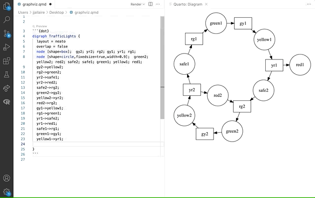

```{mermaid}
flowchart LR
A[Hard edge] --> B(Round edge)
B --> C{Decision}
C --> D[Result one]
C --> E[Result two]
```
flowchart LR
A[Hard edge] --> B(Round edge)
B --> C{Decision}
C --> D[Result one]
C --> E[Result two]
Quarto has native support for embedding Mermaid and Graphviz diagrams. This enables you to create flowcharts, sequence diagrams, state diagrams, gnatt charts, and more using a plain text syntax inspired by markdown.
For example, here we embed a flowchart created using Mermaid:
```{mermaid}
flowchart LR
A[Hard edge] --> B(Round edge)
B --> C{Decision}
C --> D[Result one]
C --> E[Result two]
```
flowchart LR
A[Hard edge] --> B(Round edge)
B --> C{Decision}
C --> D[Result one]
C --> E[Result two]
As illustrated above, diagrams are embedded using {mermaid} and {dot} executable cells (dot is underlying language of Graphviz)
Diagrams are a recent addition to Quarto—you should make sure to update to the very latest version of Quarto (v0.9.518 or higher) before trying out the features described below.
For print output formats like pdf or docx, diagram rendering makes use use of the Chrome or Edge web browser to create a high-quality PNG. Quarto can automatically use an existing version of Chrome or Edge on your system, or alternatively if you don’t have either installed, can use a lighter-weight library version of Chrome (see Chrome Install below for details).
Mermaid is a Javascript based diagramming and charting tool that uses Markdown-inspired text definitions and a renderer to create and modify complex diagrams.
Above we demonstrated a flowchart created with Mermaid, here is a sequence diagram (also embedded using a {mermaid} executable cell):
```{mermaid}
sequenceDiagram
participant Alice
participant Bob
Alice->>John: Hello John, how are you?
loop Healthcheck
John->>John: Fight against hypochondria
end
Note right of John: Rational thoughts <br/>prevail!
John-->>Alice: Great!
John->>Bob: How about you?
Bob-->>John: Jolly good!
```
sequenceDiagram
participant Alice
participant Bob
Alice->>John: Hello John, how are you?
loop Healthcheck
John->>John: Fight against hypochondria
end
Note right of John: Rational thoughts <br/>prevail!
John-->>Alice: Great!
John->>Bob: How about you?
Bob-->>John: Jolly good!
Note that Mermaid output varies depending on the target format (e.g. HTML vs. print-based). See the section below on Mermaid Formats for additional details.
To learn more about using Mermaid, see the Mermaid website or the Mermaid book (which is written by the creator of Mermaid).
The Graphviz layout programs take descriptions of graphs in a simple text language, and make diagrams in useful formats. Graphviz has many useful features for concrete diagrams, such as options for colors, fonts, tabular node layouts, line styles, hyperlinks, and custom shapes.
For example, here is a simple undirected graph created using graphviz:
```{dot}
graph G {
layout=neato
run -- intr;
intr -- runbl;
runbl -- run;
run -- kernel;
kernel -- zombie;
kernel -- sleep;
kernel -- runmem;
sleep -- swap;
swap -- runswap;
runswap -- new;
runswap -- runmem;
new -- runmem;
sleep -- runmem;
}
```
Note that the cell options syntax is slightly different for {mermaid} and {dot} (%%| and //|, respectively) because they have distinct character sequences for single-line comments.
To learn more about Graphviz, see the Graphviz website, this list of simple Graphiz Examples, or the Graphviz Gallery.
There are a variety of tools available to improve your productivity authoring diagrams:
The Mermaid Live Editor is an online tool for editing and previewing Mermaid diagrams in real time.
Graphviz Online provides a similar tool for editing Graphviz diagrams.
RStudio includes support for editing and previewing .mmd and .dot files (with help from the DiagrammeR package).
The Quarto VS Code Extension supports live preview of diagrams embedded in .qmd files and in .mmd and .dot files:

Note that you should be sure to have installed the very latest version of the Quarto VS Code extension to try this out.
Diagrams can be treated as figures the same way that images and plot output are. For example, if we added the following figure options to the diagram above:
We’d get this output:
You might find it more convenient to edit your diagram in a standalone file and then reference it from within your .qmd document. You can do this by adding the file option to a Mermaid or Graphviz cell.
For example, here we include a very complex diagram whose definition would be too unwieldy to provide inline:
```{dot}
//| label: fig-linux-kernel
//| fig-cap: "A diagram of the Linux kernel."
//| file: linux-kernel-diagram.dot
```
Note that the label and fig-cap attributes still work as expected with file includes.
By default, diagrams are rendered at their natural size (i.e. they are not stretched to fit the default figure size for the current document). Within HTML output formats, diagrams are also made responsive, so that their width doesn’t overflow the current page column. This is similar to the treatment given to images and dynamic JavaScript widgets.
You can disable responsive sizing by specifying the fig-reponsive: false option. You can also specify explicit sizes via fig-width and fig-height. For example, here we want to make a mermaid diagram a bit bigger because it contains only a few elements:
When you include a Mermaid diagram in a document, the diagram format used is chosen automatically based on the output format:
| Format | Output |
|---|---|
HTML (html, revealjs, etc.) |
Mermaid native (JavaScript) |
GitHub Flavored Markdown (gfm) |
Mermaid code block |
Other Formats (pdf, docx, etc.) |
PNG image |
The Mermaid native format is used by default whenever the underlying output format supports JavaScript.
When using format: gfm, diagrams will be emitted as plain mermaid code blocks. This is because both GitHub and GitLab natively support rendering Mermaid diagrams from code.
For formats that don’t do special handling of Mermaid or lack a JavaScript run-time (e.g. formats like pdf, docx, epub, etc.) a PNG image is created using Chrome.
You can change the default behavior using the mermaid-format option. For example:
Valid values for mermaid-format include js, png, and svg,
Note that unlike other executable cell handlers (e.g. {python}), cells with diagrams don’t display their code in the rendered document by default. You can display code by adding an echo: true option in a comment at the top the cell.
To include code for {mermaid}, add %%| echo: true to the top of the cell. For example:
To include code for {dot}, add //| echo: true to the top of the cell. For example:
For print output formats like pdf or docx, diagram rendering makes use use of the Chrome or Edge web browser to create a high-quality PNG.
Quarto can automatically use an existing version of Chrome or Edge on your system for rendering. Alternatively, if you don’t have either, you can install a minimal version of Chrome for use by Quarto with the following command:
Quarto installs headless Chromium via Puppeteer. The bundled Chromium that Puppeteer installs may not work on Docker containers; please check the Puppeteer documentation.